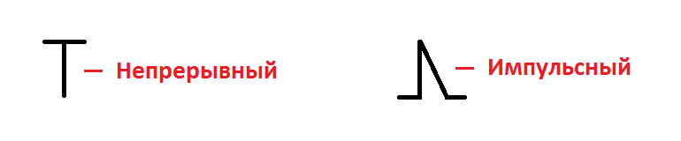

Как переключать непрерывный и импульсный режимы
- Нажать и удерживать кнопку . На экране появится ".2."
- Нажать дважды , на экране появится ".4.", и сразу же символ режима работы:
- с помощью клавиш и выбрать нужный режим, где: 
- Нажать .

После проверки показаний в непрерывном и импульсном режиме, обязательно переключить прибор в непрерывный режим, вся настройка проводится именно в этом режиме